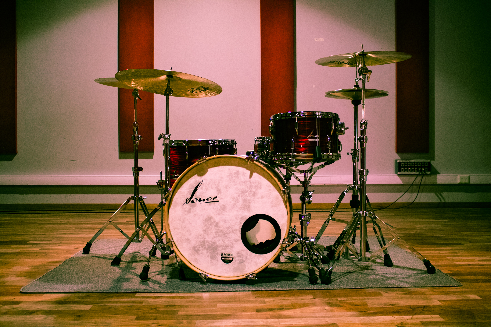
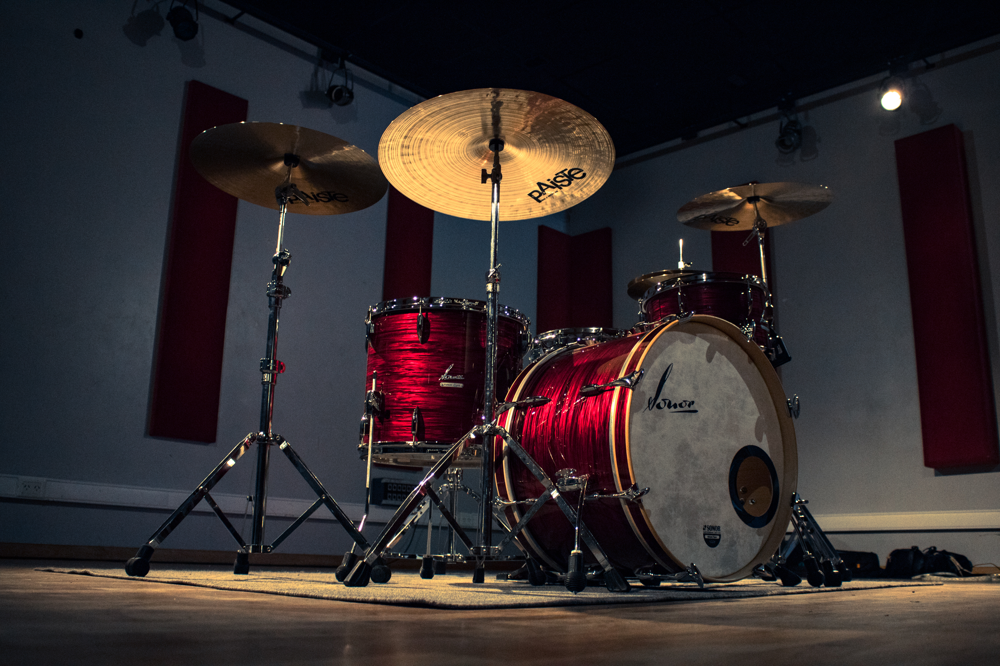

Mi Historia
Soy BATERISTA PROFESIONAL, desde el 2012 soy miembro de la banda tributo a Soda Stereo, desarrollando el papel que Charly Alberti tuvo en dicho grupo musical. Partícipe de shows multitudinarios y de gran importancia, tanto en la Ciudad de Buenos Aires como en el interior y exterior del país. También en presentaciones de radio y televisión.
Asi tambien tuve diversas participaciones con otros artistas, en el 2014 fui parte junto a Raul Porcheto de Shows por la República Argentina y en el 2016 fui miembro estable de la banda solista de Marcelo Moura, cantante del legendario grupo Virus.presentando el disco “Disculpen la deMoura”.
Mis shows mas emblemáticos fueron:
Shows destacados:
- Teatro Gran Rex Ciudad Autónoma de Buenos Aires, Argentina Noviembre 2016 Septiembre 2017
- Teatro Vorterix Ciudad Autónoma de Buenos Aires, Argentina 2014 - 2016
- Teatro Caupolicán Santiago de Chile, Chile Septiembre 2017
- Teatro Municipal Jorge Eliécer Gaitán Bogotá, Colombia 2017
- Car Audio Rock Festival Bogotá - Medellín, Colombia 2014 - 2016
- Plaza de Toros - La Bombonerita Ambato - Quito, Ecuador 2013 - 2014
- Explanada Norte, Estadio Nacional de Lima Lima, Perú Julio 2016
- Groove Palermo Ciudad Autónoma de Buenos Aires, Argentina 2016 - 2017
- La Trastienda Ciudad Autónoma de Buenos Aires, Argentina 2013 - 2017
- Samsung Studio Ciudad Autónoma de Buenos Aires, Argentina 2012 - 2013
- Auditorio Casino City Center Ciudad de Rosario, Provincia de Santa Fé, Argentina Octubre 2017
- Teatro Radio City Ciudad de Mar del Plata, prov. de Buenos Aires, Argentina Septiembre 2017
- Hard Rock Café Punta Cana y Santo Domingo, Rep. Dominicana Octubre 2017
- Bluzz Live Ciudad Montevideo, Uruguay Noviembre 2015
- Kilkenny Asuncion, Paraguay Abril 2015

